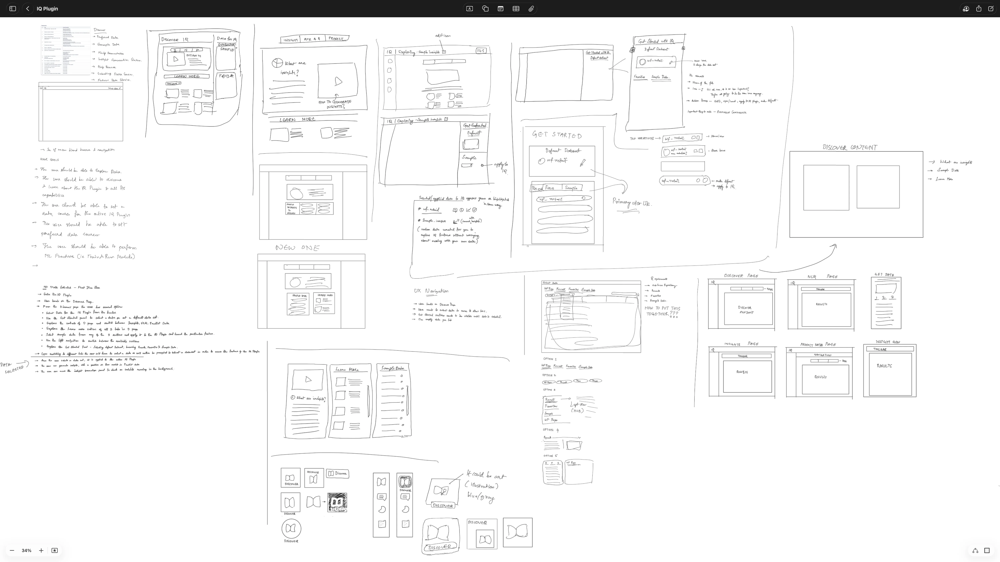

We Built the Intelligence. Nobody Knew It Existed.

The Problem: NLQ, Insights, ML — low adoption. Millions invested, buried in menus, invisible to users.
Impact: NLQ adoption +25% from redesign (Phi-3 SLM upgrade). DSML Hub implemented in code — pending launch.
Key Principles & Decisions
Create a "Start Page" for Data Science
Users didn't know where to begin. A landing page provided context and entry points.
Unified Styling across 3 Engines
NLQ, Insights, and ML looked completely different. Unifying them built trust.
Embed "Ask AI" in the Global Header
NLQ needs to be always available, not just in a specific tab.
Discover Deeply: The Invisible Feature Problem
Millions invested. Low adoption. The algorithms weren't broken; the architecture was.
We had built powerful enterprise AI capabilities—Natural Language Query, Automated Insights, and Predictive ML—but they were fragmented across the platform. NLQ was buried inside "Explore Data." Insights was hidden in a submenu.
The problem wasn't the algorithms; it was the architecture. Millions in engineering investment were sitting at near-zero adoption because the features were essentially invisible to the users who needed them most.
This wasn't on a roadmap. My PM and I seized the opportunity during product consolidation talks. I designed dozens of concept mockups, ran weekly FigJam sessions across timezones, and pitched the vision. The VP approved. We owned it end-to-end.
Empathize with the Ecosystem: Modernizing the Building Blocks
Before unifying the system, I modernized each tool individually.
Before unifying the architecture, I had to fix the foundation. NLQ felt like a command-line tool dressed in web UI: bare text fields, cryptic errors, and zero guidance. Insights consisted of dense data grids lacking context.
Smarter NLQ via Phi-3 SLM: I redesigned the interaction model from the ground up. I introduced suggested queries to eliminate the "blank page" problem, replaced stack traces with conversational error states, and designed scannable insight cards.
Because I already owned and modernized NLQ, Insights, and ML individually, I was the natural choice to lead the overarching IQ Plugin initiative. When the Hub opportunity arrived, I had all three building blocks modernized and ready for integration.
Simplify the Chaos: Architecture Before Tickets
I architected the cross-functional workflows before a single Jira ticket existed.
I pushed for cross-functional alignment in a way that hadn't been done in the organization before. I architected the unified workflows across all three AI engines before anyone asked for them.
My PM Karishma wrote the Jira tickets *after* seeing my mockups. We ran 3–4 meetings a week across timezones to ensure engineering feasibility.
One Entry Point We designed smart integration inside the existing WebFOCUS Hub. No new backend infrastructure was needed. We transformed three scattered menus into one unified destination, with one consistent mental model.


Sketches & Early Concepts


Responsive Design

Iterate with Inclusion: Four Iterations to the Final Hub
V1 was too dense. V2 was too passive. V3 competed with Hub navigation. V4 landed perfectly.
V1 was too dense. V2 was too passive. V3 competed with the global Hub navigation. V4 landed perfectly: clean, outcome-based navigation tiles.
Design Iterations


I designed a unified "Start Page" for Data Science that used clean, outcome-based verbs (Predict, Ask, Analyze) to guide business users naturally, rather than forcing them to decipher technical tool names.
Grow Through Constraints: Defending Data Over Opinions
I used industry precedents and interaction logic to defend scannable tiles against veteran architects advocating for list views.
The lead architect (20+ years) and the WebFOCUS architect (35+ years) pushed hard for traditional list views. I demonstrated that list views were the exact reason these features were invisible in the first place. By using industry precedents and interaction logic, I shifted their mental model toward large, scannable tiles, proving they provided immediate context for intimidating AI features.

Insights in IQ


NLQ in IQ


ML in IQ


Preview Data in IQ


Integrating the ML workflow into the IQ Plugin was the hardest sell. Despite being the newest person in a room of 30-year veterans, I backed my architecture with user evidence. My Director of Design gave me the mandate, and I drove the final integration.
Navigate Forward: Visibility Was the Solution
+25% NLQ adoption jump. The Hub is now implemented, unifying three fragmented AI tools into one ecosystem.
We didn't add new capabilities. We didn't rewrite the core engines. We just made the existing ones visible.
Live now: NLQ adoption jumped 25% post-redesign. Insights with auto-generated visualizations is live. Implemented: The unified DSML Hub and ML Functions were code-complete at my departure, with final QA pending.
The features didn't change. The architecture did. It was the highest-leverage design work possible: making powerful tools findable.
"What They Said"
"Anuja led UX design initiatives with remarkable creativity, empathy, and precision. She consistently demonstrated a deep understanding of user-centered design and the ability to translate complex product requirements into intuitive and visually engaging experiences. What truly stands out is her collaborative spirit and problem-solving mindset."
— Karishma Khadge, Senior Product Manager
"Anuja made a significant impact modernizing UX across our legacy enterprise products. She brings a rare combination of strategic thinking, design intuition, and the ability to work seamlessly across product, engineering, and business teams. Anuja is bold in her ideas and consistently proactive in turning complex problems into practical, user-centered solutions."
— Vijay Raman, VP of Product Management